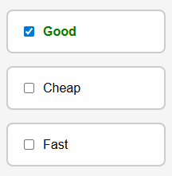

Главный компонент управления логикой взаимоисключающих опций
<template>
<div class="checkbox-group">
<ToggleOption
v-model="good"
label="Good"
@update:modelValue="handleChange('good')"
/>
<ToggleOption
v-model="cheap"
label="Cheap"
@update:modelValue="handleChange('cheap')"
/>
<ToggleOption
v-model="fast"
label="Fast"
@update:modelValue="handleChange('fast')"
/>
</div>
</template>
<script>
import ToggleOption from './components/ToggleOption.vue';
export default {
name: 'App',
components: {
ToggleOption
},
data() {
return {
good: false,
cheap: false,
fast: false
};
},
methods: {
handleChange(changed) {
// Если все три становятся true — сбрасываем противоположное значение
if (this.good && this.cheap && this.fast) {
if (changed === 'good') {
this.fast = false;
} else if (changed === 'cheap') {
this.good = false;
} else if (changed === 'fast') {
this.cheap = false;
}
}
}
}
};
</script>
<style>
body {
font-family: Arial, sans-serif;
padding: 2rem;
background: #f5f5f5;
}
.checkbox-group {
display: flex;
flex-direction: column;
gap: 1rem;
max-width: 200px;
margin: auto;
}
</style>Переиспользуемый компонент переключателя с поддержкой v-model
<template>
<label class="toggle-option">
<input
type="checkbox"
:checked="modelValue"
@change="$emit('update:modelValue', $event.target.checked)"
/>
<span>{{ label }}</span>
</label>
</template>
<script>
export default {
name: 'ToggleOption',
props: {
modelValue: {
type: Boolean,
required: true
},
label: {
type: String,
required: true
}
},
emits: ['update:modelValue']
};
</script>
<style scoped>
.toggle-option {
background: #fff;
padding: 1rem;
border: 2px solid #ccc;
border-radius: 8px;
cursor: pointer;
display: flex;
align-items: center;
gap: 0.5rem;
transition: 0.2s;
}
input[type="checkbox"]:checked + span {
font-weight: bold;
color: green;
}
</style>